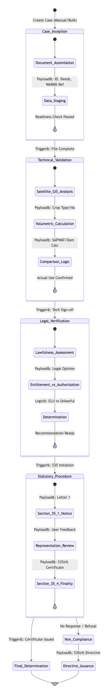
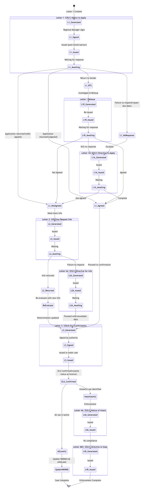
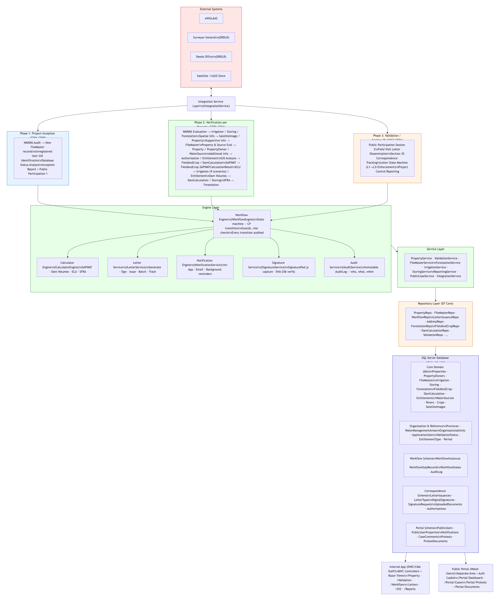
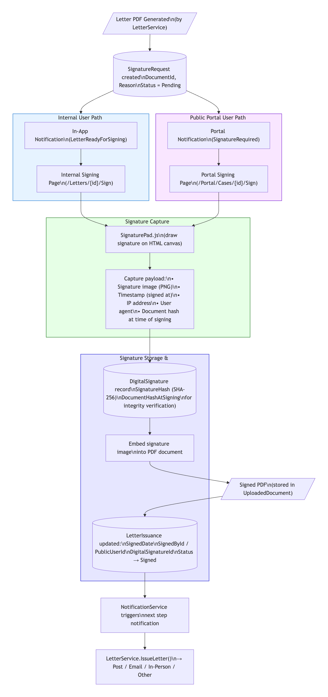

State Machine Architecture, Letter Lifecycle, Data Flow & Electronic Signature Specification
The Validation and Verification (V&V) of existing lawful water use is a statutory obligation under Sections 32–35 of the National Water Act (Act 36 of 1998). The Department of Water and Sanitation (DWS) is required to verify the lawfulness and extent of all existing water use across South Africa, encompassing approximately 500,000 property records managed by DWS regional offices and Catchment Management Agencies (CMAs) across 19 Water Management Areas.
The DWA V&V System is an electronic information management system designed to digitise, automate, and enforce the V&V process. At its core is the Workflow Engine — a state machine that governs the lifecycle of every case file (FileMaster) from initial inception through technical evaluation, legal verification, statutory correspondence under Section 35, and final determination of Existing Lawful Use (ELU).
This document provides a comprehensive specification of the four principal workflows within the system:
The workflow engine is built on a finite state machine pattern. Every FileMaster case exists in exactly one state at any given time, and may only transition to a defined set of successor states. This design was chosen for three fundamental reasons:
Each state transition is protected by one or more transition guards —
implementations of the ITransitionGuard interface. Guards are checked in sequence
before any transition is permitted. A guard may verify that required data is present (e.g.,
SAPWAT calculations exist for CP6), that the requesting user holds the correct role (e.g., only
RegionalManager or above may approve Section 35 letters), or that business rules
are satisfied (e.g., dam calculations are present or explicitly marked as not applicable).
The AuditEntry table is append-only. Records are never updated or deleted. Each entry
captures: the acting user, the action performed, the entity affected, the previous and new state
values, a timestamp, and additional metadata. This log provides the evidentiary basis for any
legal challenge to a V&V determination.
Successful state transitions raise domain events that are consumed by the
NotificationService. This decoupled, event-driven architecture ensures that
notifications (email, in-app, SMS) are triggered automatically without the workflow engine
needing direct knowledge of the notification mechanism. For example, when a Letter 1 transitions
to Issued, a LetterIssuedEvent is raised, which the notification service
consumes to alert the relevant water user and the case validator.

The V&V Workflow State Machine governs the entire lifecycle of a FileMaster case. As shown in Figure 1, the process is organised into five macro phases, each containing one or more sequential states:
A case begins at Create Case and advances linearly through each phase. At the Determination stage, the case may branch into Non-Compliance if unlawful use is identified, leading to Directive Issuance under Section 53(1). Otherwise, the case proceeds through the statutory procedure to Final Determination.
The Case Inception phase establishes the evidentiary foundation for the entire V&V process. It comprises three states:
The entry point. A Validator or higher creates a new FileMaster record, linking it
to a Property via the SG Code and to the appropriate Water Management Area and organisational unit.
All foundational documents are gathered and associated with the case: identity documents, title deeds, WARMS registration references obtained from eWULAAS, SG diagrams, and any prior V&V study records. The system verifies that mandatory document types are present before allowing progression.
Imported data is normalised, validated, and staged for technical analysis. This includes reconciling property boundaries against SG data, confirming quaternary drainage and WMA assignments, and running a readiness check to ensure all prerequisite data sets are in place.
FileCompleteGuard.
The Technical Validation phase is where the quantitative analysis of water use takes place. It comprises three states:
Satellite imagery from both the qualifying period (1 October 1996 – 30 September 1998,
unified per SFRA court order) and the current period is analysed. The processed artefact produced from
this analysis is a Mapbook; SateliteImage records store the raw imagery metadata only. Crop fields and dams are digitised using GIS tools,
producing spatial layers that define the areas of water use for both periods.
The Calculator Engine executes three calculation models:
The system compares qualifying-period water use against current-period use, categorising volumes across the water use categories defined in the requirements (rows 4.1 through 4.9): possible existing, possible lawful, possible existing lawful, possible unlawful, registered (WARMS), present-day use, and possible unlawful increase or decrease.
Validator must formally sign off on the technical analysis before the case
advances to Legal Verification. The guard verifies that all three calculation types have been
completed (or explicitly marked as not applicable) and that comparison logic results are recorded.
The Legal Verification phase applies the legal framework of the National Water Act to the technical results. It comprises three states:
A legal opinion is formed on the lawfulness of the water use, considering all evidence gathered: GWCA authorisations, permits, Section 32/33 approvals, irrigation board records, water court orders, General Authorisations, and any other applicable legislative instruments. Each water use category is assessed against its legal basis.
The determined Existing Lawful Use (ELU) is compared against the user's current authorisation status. This comparison produces one of three outcomes:
The formal determination is recorded on the Validation entity, including ELU volumes, registration status, and the classification of each water use component. This state represents the point at which the case is ready to enter the statutory procedure or, if unlawful use is identified, to branch into the non-compliance path.
RegionalManager approves the determination, which triggers the transition
into the Statutory Procedure phase. If unlawful use is identified, a parallel branch to
Non-Compliance may be initiated.
The Statutory Procedure phase enacts the requirements of Section 35 of the National Water Act through formal correspondence with the water user. It comprises three states:
Letter 1 — the S35(1) Notice to Apply for Verification — is generated, signed by the Regional Manager, and served to the water user. This letter must be served in person (hand delivery by an official, agent, or sheriff), and the system records the serving official, delivery date, and method.
The water user's response is received and reviewed. The user may agree with the determination, disagree and provide additional evidence, or fail to respond within the statutory period. Each outcome triggers a different downstream path (detailed in Section 4).
Upon resolution of all representations and any additional information requests, the Section 35(4) certificate is issued — Letter 3 — which formally confirms the extent and lawfulness of the water use. This is the terminal state for compliant cases.
When a water user fails to respond to statutory notices, refuses to comply with directives, or when the determination reveals unlawful water use that cannot be regularised, the case branches into the Non-Compliance path. This branch leads to Directive_Issuance, where the following enforcement actions may be taken:
The non-compliance branch has its own letter lifecycle (detailed in Section 4.7) and terminates at Enforcement Complete, after which the case is closed with the unlawful use determination on record.
Every state transition in the workflow is protected by one or more guards that must all pass
before the transition is permitted. The WorkflowEngine.CanTransition(user, fileMaster,
targetState) method evaluates all guards and returns a boolean result with a reason
string. The following table lists representative guard examples:
| Transition | Guard | Requirement |
|---|---|---|
| CP1 → CP2 | WarmsExportGuard |
WARMS export date must be recorded on the FileMaster |
| CP1 → CP2 | SatelliteImageGuard |
At least one SateliteImage record must exist for qualifying (1 October 1996 – 30 September 1998) and current periods; and a Mapbook must be confirmed as produced |
| CP2 → CP3 | SpatialDataGuard |
River and Property SG codes must be confirmed |
| CP5 → CP6 | GisLayerGuard |
GIS spatial layers for qualifying and current periods must be confirmed |
| CP6 → CP7 | SapwatGuard |
FieldAndCrop records with SAPWATCalculationResult values must be present |
| CP7 → CP8 | EluCalculationGuard |
Validation record with ELU volumes must be set |
| CP8 → CP9 | DamCalculationGuard |
DamCalculation records must be present, or explicitly marked N/A |
| CP9 → S35 | ForestationGuard |
Forestation records must be present, or explicitly marked N/A |
| Any letter signing | RoleGuard |
Only RegionalManager or above may sign Section 35 letters |
| Any transition | AuditGuard |
An AuditEntry must be successfully written before the transition completes |

The Section 35 Letter Workflow is a nested state machine that activates after Control Point 9 (CP9) is complete. It governs the generation, signing, issuance, tracking, and response handling of all statutory letters required by Sections 35 and 53 of the National Water Act.
As shown in Figure 2, each letter follows a standard lifecycle:
IssuedDate, IssuedByUserId,
SignedByUserId, DeliveryMethod, PostalRegistrationNumber
(if registered post), DueDate, and ResponseReceivedDate. These fields
form the evidentiary record for legal compliance.
Letter 1 is the initiating notice under Section 35(1) of the National Water Act, informing the water user that their existing water use is being verified and requesting them to apply for verification. The letter lifecycle is:
Letter 1 Created → L1_Generated → L1_Signed → L1_Issued → L1_Awaiting
The Regional Manager (or delegated authority) signs the letter electronically before issuance. After issuance, the system enters the L1_Awaiting state and monitors three possible outcomes:
Additionally, a Return to Sender branch handles undeliverable letters: the state transitions to L1_RTS, and the letter may be reissued with an updated address or alternative delivery method.
Letter 1A is an escalation under Section 53(1) — a formal directive issued when the water user fails to respond to Letter 1. It follows the same lifecycle as Letter 1 (Created → Generated → Signed → Issued → Awaiting) and carries stronger legal force. The directive compels the water user to apply for verification within a specified period, with consequences for continued non-compliance.
Upon response to Letter 1A (L1A_Responded), the case returns to the standard correspondence flow. If no response is received, the case may escalate to enforcement (Letters 4A and 4&5).
Letter 2 is issued under Section 35(3)(a) when the responsible authority requires additional information to complete the verification. This typically arises when:
The letter specifies exactly what information is required and sets a deadline for submission. Upon receipt of the response (L2_Responded), the additional information is incorporated into the case and the technical evaluation may be revisited.
Letter 2A is the enforcement escalation for Letter 2 — issued under Section 35(1) as a formal directive when the water user fails to provide the additional information requested in Letter 2 within the statutory period. It follows the standard letter lifecycle and carries the same legal weight as Letter 1A.
Letter 3 is the culmination of the V&V process for compliant cases — the Section 35(4) certificate that formally confirms the extent and lawfulness of the water user's existing water use. This letter is signed by the responsible authority and constitutes an official determination under the National Water Act.
The issuance of Letter 3 leads to one of two outcomes:
When unlawful water use is identified and the water user fails to regularise their use, the enforcement sequence is initiated:
A formal notice informing the water user that the responsible authority intends to issue a directive to stop unlawful water use. This provides a final opportunity for the user to comply voluntarily or to make representations before enforcement action is taken.
The final enforcement instrument — a formal directive under Section 53(1) ordering the water user to cease all unlawful water use. Upon issuance and acknowledgement (or expiry of the response period), the case transitions to Enforcement Complete.
Upon final determination — whether through ELU confirmation (Letter 3) or enforcement
completion (Letters 4&5) — the system pushes the determination data back to
eWULAAS via the IntegrationService.UpdateWarmsData() method. This
ensures that the national water use registration system reflects the verified and validated
water use information.

The DWA V&V System is structured as a four-tier architecture, as illustrated in Figure 3:
Data flows from left to right through the system: external source data is ingested via the Integration Service, processed through the three V&V phases using specialised engines, persisted via the repository layer to SQL Server, and presented through both the internal ASP.NET Core MVC application and the separate external portal.
The V&V System integrates with four external data sources, all managed through the
IntegrationService:
| External System | Data Provided | Integration Method |
|---|---|---|
| eWULAAS | Water use registration data (WARMS records), registration status, licence information | Primary integration — API-based read/write |
| Surveyor General / DRDLR | SG farm boundaries, cadastral data, SG diagrams, property extent information | Spatial data import |
| Deeds Office / DRDLR | Title deed records, property ownership history, transfer records | Document retrieval |
| Satellite / NoSQL Store | Satellite imagery for qualifying period (1996–1999) and current period, stored in a NoSQL document store for high-volume binary data | Blob/document storage integration |
The application layer processes data through three sequential phases, each corresponding to a section of the DWS requirements document:
The foundational phase that establishes the case and gathers all prerequisite data:
The technical analysis phase where water use is quantified and classified against the qualifying period (1 October 1996 – 30 September 1998, unified per SFRA court order):
The statutory correspondence and closure phase:
The engine layer comprises six specialised components that provide the core processing capabilities of the system. These engines are coordinated through a mediator pattern, with domain events providing loose coupling between components:
| Engine | Responsibility | Key Technologies |
|---|---|---|
| Calculator Engine | Executes SAPWAT crop water requirement modelling, dam volume calculations (Appendix D wall-length and area methods), and SFRA stream flow reduction calculations | Domain-specific calculation logic; shape factors (0.33, 0.4, 0.5) |
| Letter Engine | Generates Section 35 letter PDFs from templates, manages letter lifecycle states, and tracks delivery and response | QuestPDF for PDF generation; letter type templates |
| Workflow Engine | Enforces the state machine, evaluates transition guards, manages control point progression, and raises domain events on transitions | State machine pattern; ITransitionGuard interface |
| Notification Engine | Delivers email, in-app, and SMS notifications triggered by domain events (state transitions, letter issuance, deadline reminders) | Email provider integration; in-app notification hub |
| Signature Engine | Captures electronic signatures via SignaturePad.js, generates SHA-256 hashes, embeds signatures into PDFs, and verifies document integrity | SignaturePad.js; X.509 server-side verification |
| Audit Engine | Writes immutable audit log entries for every state transition, data modification, and significant user action | Append-only AuditEntry table; structured logging |
The engines communicate through domain events following the mediator pattern.
When the Workflow Engine completes a state transition, it publishes a
StateTransitionEvent. The Notification Engine subscribes to this event and
dispatches the appropriate notifications. The Audit Engine subscribes to all events and logs
them. The Letter Engine listens for transitions into letter-related states and initiates PDF
generation. This decoupled architecture ensures that each engine can evolve independently
without creating tight dependencies.
The Service Layer orchestrates business logic by coordinating between engines,
repositories, and external integrations. Services are injected via ASP.NET Core dependency
injection and follow the pattern established by the existing PropertyService stub.
Each service encapsulates a bounded context of domain logic (e.g., LetterService
manages all letter-related operations, ValidationService manages ELU calculations).
The Repository Layer provides data access through Entity Framework Core,
implementing repository interfaces defined in the Interfaces/ directory (e.g.,
IPropertyInterface, IAddress, IForestation). All new
repository methods follow the async/await pattern with SaveChangesAsync(). The
single ApplicationDBContext manages all entity relationships, with primary keys
and foreign keys configured explicitly in OnModelCreating().
Program.cs using
builder.Services.AddScoped<IXxx, XxxRepository>().
The SQL Server database (dwa_val_ver) is organised into five logical schema groups,
as reflected in the data flow diagram:
| Schema Group | Tables | Purpose |
|---|---|---|
| Core Domain | Property, FileMaster, Entitlement, Validation, Irrigation, FieldAndCrop, DamCalculation, Forestation, Storing, PropertyOwner, PropertyOwnership | The central V&V entities representing properties, case files, water use data, and calculations |
| Organisation & Reference | Province, WaterManagementArea, OrganisationalUnit, River, Address, SateliteImage, lookup tables (ValidationStatus, RegistrationStatus, etc.) | Organisational hierarchy, geographic reference data, and seed/lookup values |
| Workflow Schema | WorkflowState, WorkflowInstance, WorkflowStepRecord, AuditEntry | State machine state storage, transition history, and immutable audit log |
| Correspondence | LetterType, LetterIssuance, UploadedDocument, DigitalSignature, SignatureRequest | Section 35 letter types, issuance records, document storage references, and electronic signatures |
| Portal Schema | ExternalUser, ExternalUserProperty, CaseComment, CaseNotification, Protest, ProtestDocument | External water user accounts, case comments, notifications, and protest records for the public-facing portal |
All primary keys are Guid values, configured in OnModelCreating().
Decimal columns use decimal(18,2) for volumes and areas, and
decimal(9,6) for geographic coordinates (latitude/longitude).

The electronic signature flow provides a dual-path signing mechanism that serves both internal DWS officials (who sign letters in the internal application) and external water users (who sign acknowledgements and responses through the public portal). As shown in Figure 4, the flow begins when a letter PDF is generated and ends when the signed document is stored, the letter issuance record is updated, and downstream notifications are triggered.
The signature mechanism is designed to produce legally admissible electronic signatures that comply with the Electronic Communications and Transactions Act (ECTA), Act 25 of 2002, by capturing sufficient metadata to establish the identity of the signatory, the integrity of the signed document, and the intent to sign.
The signature flow is initiated when the LetterService generates a letter PDF and
creates a SignatureRequest record:
Pending
The SignatureRequest triggers a notification through the NotificationService,
routed based on the signatory type:
An in-app notification of type LetterReadyForSigning is displayed in the
notification bell of the internal application. Clicking the notification routes the user to
/Letters/{id}/Sign, where the letter PDF is displayed alongside the signature
capture interface.
A portal notification of type SignatureRequired is created, accompanied by an
email notification to the external user's registered email address. The portal notification
routes to /Portal/Cases/{id}/Sign, where the same signature capture interface
is presented within the external portal layout.
Both internal and external signing interfaces use SignaturePad.js to render an HTML5 canvas element where the user draws their signature. Upon submission, the following payload is assembled:
Upon submission of the signature payload, the server performs the following operations:
DocumentHashAtCreation on the SignatureRequest. Mismatches are rejected.DigitalSignature record is created, storing the signature image (PNG), the SHA-256 hash, the signatory's identity, IP address, user agent, and timestamp.UploadedDocument record is updated with the new BlobPath.LetterIssuance record is updated with SignedDate, SignedById, DigitalSignatureId, and Status transitions to Signed.Once the letter is signed and the LetterIssuance record is updated, the following post-signing actions are triggered:
NotificationService raises a LetterSignedEvent domain event, triggering notifications to relevant parties (the case validator, the water user, and any watchers on the case).LetterService.IssueLetter() method is invoked to dispatch the signed letter via the appropriate delivery method:
PostalRegistrationNumberL1_Signed → L1_Issued).The electronic signature implementation is designed to comply with the Electronic Communications and Transactions Act (ECTA), Act 25 of 2002, which establishes the legal framework for electronic signatures in South Africa. Key compliance measures include:
DocumentHashAtSigning is permanently stored and can be compared against the current document hash at any future point. Any modification to the signed document is detectable.The following table summarises the core design patterns employed across the workflow and process architecture:
| Pattern | Application | Component |
|---|---|---|
| State Machine | Governs the lifecycle of every FileMaster case through defined states and transitions. Ensures deterministic, auditable progression through control points. | WorkflowEngine |
| Guard / Specification | Each state transition is protected by composable guard objects that verify preconditions (data presence, role authorisation, business rules) before permitting advancement. | ITransitionGuard |
| Repository | Abstracts all data access behind interface contracts, enabling testability and separation of the data layer from business logic. | IPropertyInterface, IAddress, IForestation, etc. |
| Strategy | Letter delivery methods (Post, Email, In-Person, Other) are implemented as interchangeable strategies, selected at runtime based on the letter type and case requirements. | LetterService delivery methods |
| Observer / Domain Events | State transitions and significant actions publish domain events that are consumed by loosely coupled subscribers (notifications, audit logging, integration updates). | NotificationService, AuditService |
| Mediator | Engine coordination is managed through a central mediator, preventing direct dependencies between engines while enabling complex multi-engine workflows. | Engine layer coordination |
| Immutable Log | All audit entries are append-only records that can never be modified or deleted, providing a tamper-proof evidentiary trail for legal and regulatory compliance. | AuditEntry table |
The workflow and process designs documented here represent the target architecture for the DWA V&V System. The following implementation tasks are prioritised for the next development phases:
Implement the core WorkflowEngine class with the state machine, transition guard
evaluation, and domain event publishing. Create the WorkflowState seed data for
all states identified in this document. Implement the ITransitionGuard interface
and create guard implementations for each control point transition.
Design and implement QuestPDF templates for all seven Section 35 letter types (Letters 1, 1A, 2, 2A, 3, 4A, and 4&5). Each template must incorporate the DWS letterhead, case-specific data fields, signature placement zones, and statutory language as prescribed by the NWA.
Integrate SignaturePad.js into both the internal application and external portal. Implement the
server-side signature verification, hash comparison, and PDF embedding pipeline. Create the
DigitalSignature and SignatureRequest entities and their corresponding
repository interfaces.
Implement the NotificationService with support for email (via SMTP or a
transactional email provider), in-app notifications (via a notification hub), and SMS (via an
SMS gateway provider). Define the notification templates for each domain event type and configure
the delivery preferences per user role.
Develop the detailed API integration specification for eWULAAS, covering the data contracts for both reading registration data at case inception and writing determination data at case closure. Coordinate with the eWULAAS development team (also on C#/ASP.NET/SQL Server) to agree on authentication, data formats, error handling, and retry policies.
DWA Validation & Verification System — Workflow & Process Design — Version 1.0
Department of Water and Sanitation (DWS) — 25 March 2026
End of Document